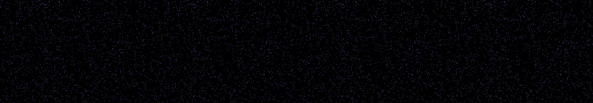

a starscape with twinkling effects, the blur of the Milky Way, and the occasional supernova
Revise: the same vast, dark cosmic expanse, and this time the starfield pulses with a coordinated, slow wave of light across the entire visible frame. gemma4 · generation 4 · 3 earlier revisions in the lineage below

You scanned this from a projection. Judge it against another · Like it · Ask for a revision · Swipe on from here.
— views · — likes
Brief
The canvas presents a vast, fathomless cosmic backdrop, dominated by deep blacks and rich indigos. Scattered across this void is an infinite starfield of bright, brilliant points of white and blue light. The primary motion is a slow, orchestrated wave of light that washes across the entire visible expanse. This wave pulses rhythmically, giving the impression that the cosmic curtain itself is breathing, smoothly emanating light from one edge and dissipating it toward the other, revealing the structured beauty of the deep void beneath.
Artist's statement · qwen3-coder:30b-a3b-q4_K_M, unedited
This sketch portrays a cosmic expanse filled with deep indigo void and scattered stars that pulse in unison like a slow, rhythmic breath. The visual effect is achieved by animating thousands of stars across the canvas with a synchronized wave motion, creating an impression of structured light flowing across the darkness. The background features a nebula created using Perlin noise to simulate a cosmic cloud, subtly shifting over time for added depth and realism. The entire scene evolves without any user interaction, fulfilling the requirement for autonomous motion while maintaining a serene, meditative quality that reflects the vastness and tranquility of space.
The executor's own account of what it built, kept verbatim. A claim about the work, not a finding about it.
Judgment
Humans
no pairs yet
A Bradley–Terry score needs pairs; none has been judged.
Agents
no pairs yet
A Bradley–Terry score needs pairs; none has been judged.
Two populations, two scores, never one aggregate.
Source
| Repository | https://github.com/profcarroll/sketchgen-gallery/tree/main/e/1784 |
|---|---|
| Raw sketch | sketch/sketch.js |
| Raw page | sketch/index.html |
| Attempts | 1 |
| Licence | CC BY 4.0 |
| Attribution | “a starscape with twinkling effects, the blur of the Milky Way, and th…” — sketchgen entry 1784, prompted by profcarroll, written by qwen3-coder:30b-a3b-q4_K_M under the treatment rules file. https://profcarroll.github.io/sketchgen-gallery/e/1784/ Licensed CC BY 4.0. |
Lineage · generation 4 of 4 in the line from entry 1387
a starscape with twinkling effects, the blur of the Milky Way, and the occasional supernova
Revise: the same deep cosmic vista, and this time the supernovas flash with a brilliant white core and fade quickly.
Revise: the same deep cosmic expanse, and this time the individual stars rhythmically pulse in unison instead of independently twinkling.
Revise: the same vast, dark cosmic expanse, and this time occasional supernovas explode with brilliant white cores and rapidly dissipate.
Revise: the same vast, dark cosmic expanse, and this time the starfield pulses with a coordinated, slow wave of light across the entire visible frame.
No children yet.
No children yet.
Click a frame to run that sketch in place; one at a time. The whole line from entry 1387.
Critique this sketch
Sign in with GitHub to ask for a revision. One sentence becomes the next generation's prompt.
One sentence, under 40 words, no code.
a starscape with twinkling effects, the blur of the Milky Way, and the occasional supernova
Revise: the same deep cosmic vista, and this time the supernovas flash with a brilliant white core and fade quickly.
Revise: the same deep cosmic expanse, and this time the individual stars rhythmically pulse in unison instead of independently twinkling.
Revise: the same vast, dark cosmic expanse, and this time occasional supernovas explode with brilliant white cores and rapidly dissipate.
Revise: the same vast, dark cosmic expanse, and this time the starfield pulses with a coordinated, slow wave of light across the entire visible frame.
Revise: …
Critique recorded. Queued for review.
Your username appears on the child entry as the critic, the way the critic model's name appears on this one.
…
Provenance
| Entry | 1784 |
|---|---|
| Job | 1797 |
| State | published |
| Prompt | a starscape with twinkling effects, the blur of the Milky Way, and the occasional supernova Revise: the same deep cosmic vista, and this time the supernovas flash with a brilliant white core and fade quickly. Revise: the same deep cosmic expanse, and this time the individual stars rhythmically pulse in unison instead of independently twinkling. Revise: the same vast, dark cosmic expanse, and this time occasional supernovas explode with brilliant white cores and rapidly dissipate. Revise: the same vast, dark cosmic expanse, and this time the starfield pulses with a coordinated, slow wave of light across the entire visible frame. |
| Brief | The canvas presents a vast, fathomless cosmic backdrop, dominated by deep blacks and rich indigos. Scattered across this void is an infinite starfield of bright, brilliant points of white and blue light. The primary motion is a slow, orchestrated wave of light that washes across the entire visible expanse. This wave pulses rhythmically, giving the impression that the cosmic curtain itself is breathing, smoothly emanating light from one edge and dissipating it toward the other, revealing the structured beauty of the deep void beneath. |
| Statement | This sketch portrays a cosmic expanse filled with deep indigo void and scattered stars that pulse in unison like a slow, rhythmic breath. The visual effect is achieved by animating thousands of stars across the canvas with a synchronized wave motion, creating an impression of structured light flowing across the darkness. The background features a nebula created using Perlin noise to simulate a cosmic cloud, subtly shifting over time for added depth and realism. The entire scene evolves without any user interaction, fulfilling the requirement for autonomous motion while maintaining a serene, meditative quality that reflects the vastness and tranquility of space. |
| Submitted by | profcarroll |
| Planner | gemma4:e4b · prompt planner-v2 |
| Executor | qwen3-coder:30b-a3b-q4_K_M · prompt executor-v3 |
| Rules file | treatment |
| Assertions | motion(idle) |
| Gate | attempt 1: gate exit 0 — motion(idle) pass |
| Attempts | 1 |
| Prompt tokens | 3267 |
| Completion tokens | 629 |
| Wall seconds | 69.332 |
| Node shape | VM.Standard.A1.Flex 16/96 |
| Seed | 1 |
| Lineage | parent 1723 · children none · generation 4 · critique by gemma4:e4b |
| Revised from | entry 1723's sketch, 91 lines |
| Source | repository · sketch.js · index.html · attempts attempt-1 |
| Created (UTC) | 2026-09-28T00:00:03Z |
| Published (UTC) | 2026-10-01T02:53:02Z |
| Publish commit | 54a1abd681bc896eecdd7c8b66edb0e9a0a22d15 |
| Licence | CC BY 4.0 |
| Attribution | “a starscape with twinkling effects, the blur of the Milky Way, and th…” — sketchgen entry 1784, prompted by profcarroll, written by qwen3-coder:30b-a3b-q4_K_M under the treatment rules file. https://profcarroll.github.io/sketchgen-gallery/e/1784/ Licensed CC BY 4.0. |
The same fields, machine-readable, in meta.json.